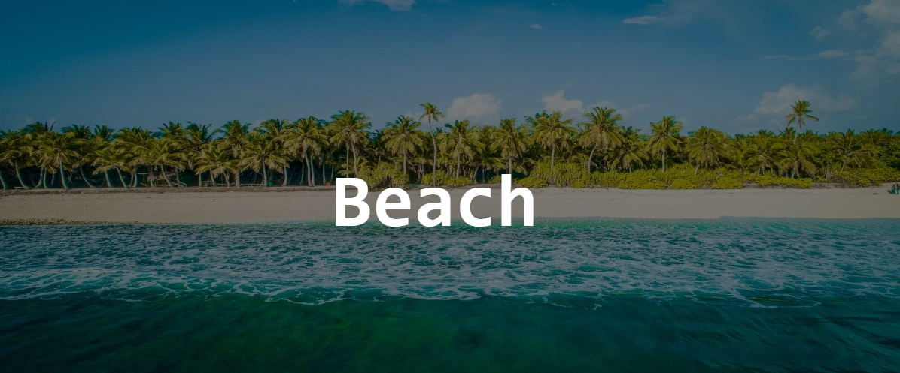
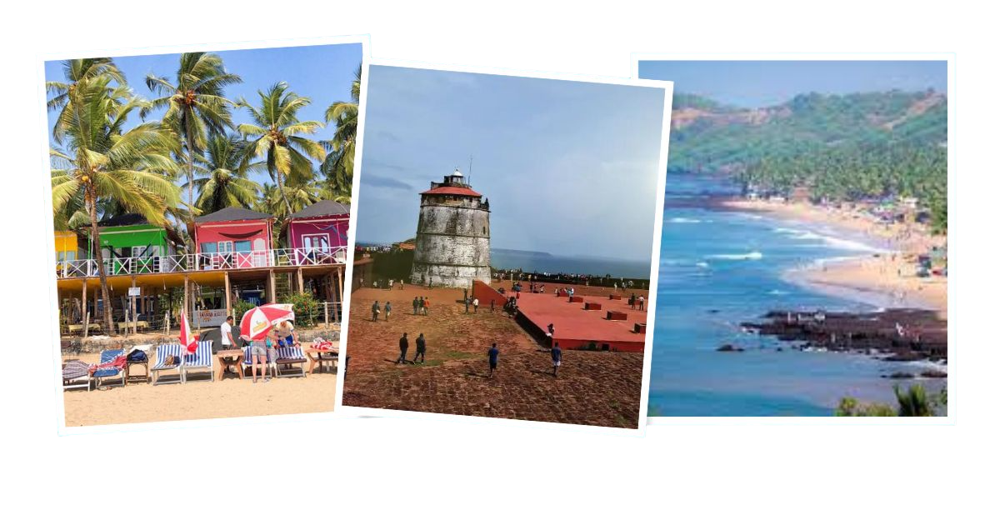
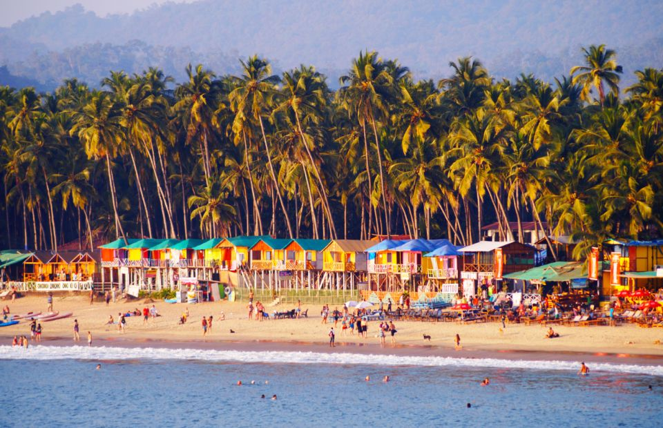
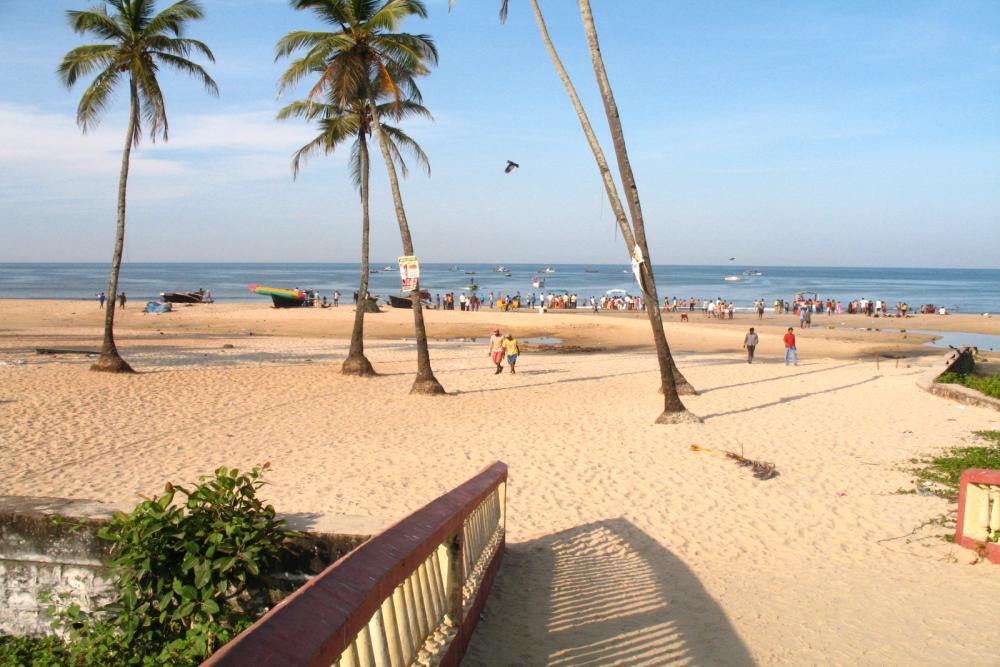
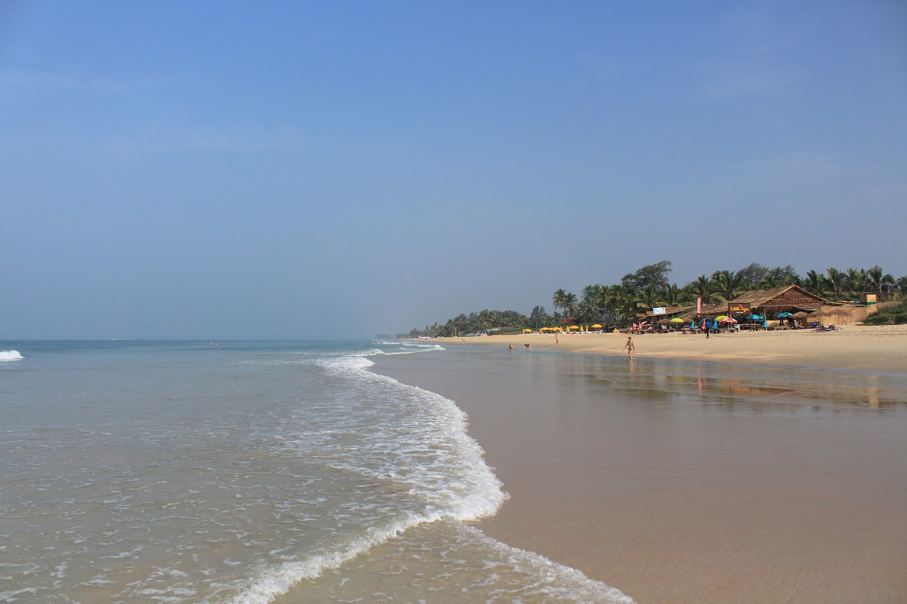
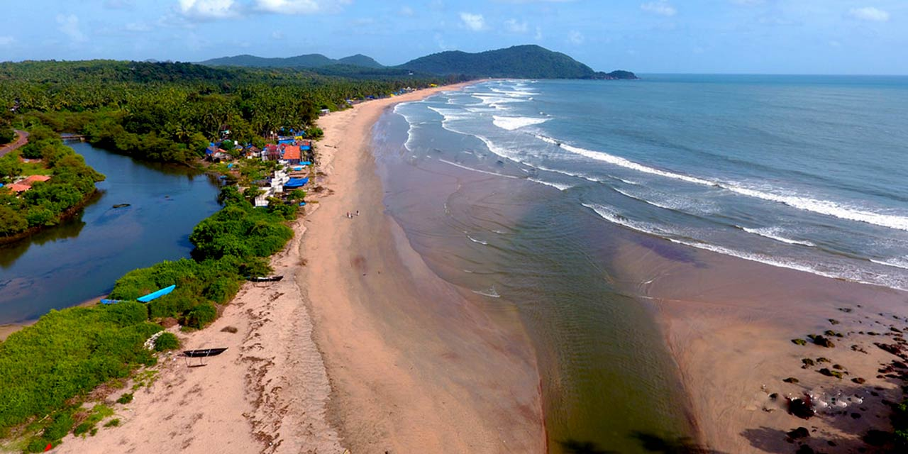
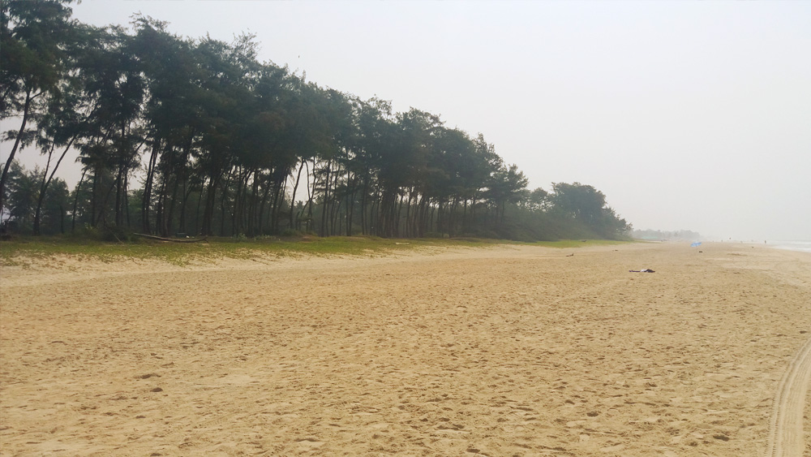

Adventour

South Goa:Beach
South Goa is home to some of the most beautiful and serene beaches in India, offering visitors a perfect escape
from the hustle
and bustle of daily life. The beaches in South Goa are characterized by their soft white
sands,
crystal-clear waters, and lush
green surroundings. They are less crowded than the beaches in North Goa,
offering
visitors a more relaxed and peaceful atmosphere.

Palolem Beach:
Palolem Beach is a beautiful crescent-shaped beach located in Canacona, South Goa. The beach is known for
its stunning natural beauty, with crystal-clear waters, soft white sands, and towering coconut palms that
line the shoreline. Palolem Beach is a popular destination for tourists seeking a laid-back and relaxing
beach holiday, with a range of beachside shacks, cafes, and restaurants offering local and international
cuisines. The beach also offers a range of water sports activities, including kayaking, paddleboarding, and
dolphin watching. Palolem Beach is often considered one of the most beautiful beaches in South Goa and is a
must-visit destination for beach lovers visiting the region.

Colva Beach:
Colva Beach is a beautiful beach located in South Goa, about 6 km from Margao. The beach is famous for its
long and wide stretch of golden sands and picturesque palm trees lining the shore. Colva Beach is one of the
most popular beaches in South Goa and attracts a large number of visitors, especially families, due to its
calm waters and a range of water sports activities like jet skiing, parasailing, and banana boat rides. The
beach has a range of shacks, cafes, and restaurants serving local and international cuisine, as well as
several shops selling souvenirs and beachwear. Colva Beach is also known for its vibrant nightlife and
offers a range of options for visitors looking for entertainment after sunset.

Benaulim Beach:
Benaulim Beach is a beautiful and serene beach located in South Goa, around 2 km from Colva Beach. The beach
is known for its pristine waters, soft white sands, and laid-back atmosphere, making it an ideal destination
for visitors seeking a peaceful and relaxing beach holiday. Benaulim Beach is also home to a range of
beachside shacks, restaurants, and cafes serving local and international cuisine, as well as several shops
selling souvenirs and handicrafts. The beach offers a range of water sports activities, including
parasailing, jet skiing, and banana boat rides. Visitors can also explore the area's rich cultural heritage
by visiting nearby temples and historical sites.

Agonda Beach:
Agonda Beach is a serene and secluded beach located in South Goa, around 37 km from Margao. The beach is
known for its pristine beauty, soft white sands, and clear blue waters, making it an ideal destination for
visitors seeking a peaceful and relaxing beach holiday. Agonda Beach is less crowded than some of the other
beaches in Goa, and its laid-back atmosphere makes it a popular spot for yoga and meditation retreats. The
beach also offers a range of water sports activities, including kayaking and stand-up paddleboarding. Agonda
Beach is home to a few beachside shacks and restaurants serving local and international cuisine, as well as
several shops selling souvenirs and handicrafts.

Varca Beach:
Varca Beach is a beautiful and secluded beach located in South Goa, around 6 km from Colva Beach. The beach
is known for its pristine and quiet atmosphere, making it an ideal destination for visitors seeking a
peaceful and relaxing beach holiday. The beach is also famous for its soft white sands and crystal clear
waters, which are perfect for swimming and sunbathing. Varca Beach offers a range of water sports
activities, including jet skiing and parasailing, and is home to a range of beachside shacks and restaurants
serving local and international cuisine. The area surrounding Varca Beach is also home to several temples
and historical sites that visitors can explore.

Also Read